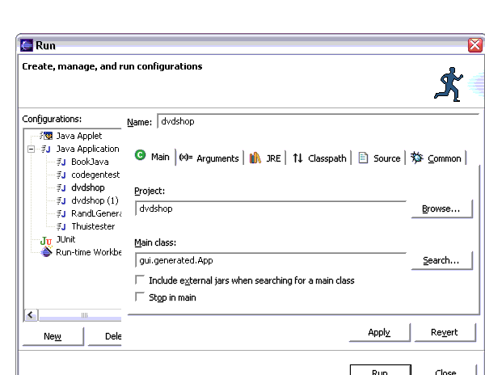
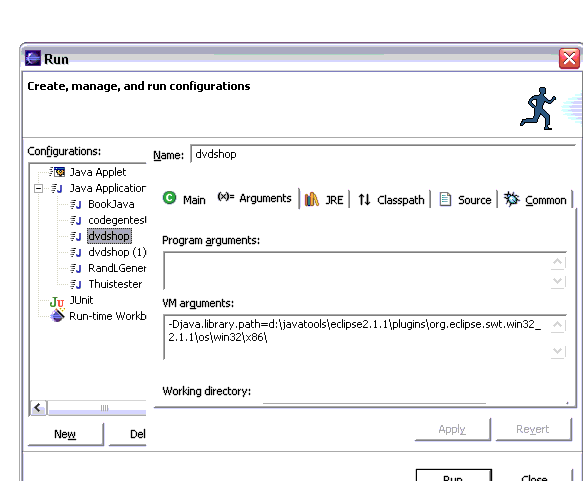
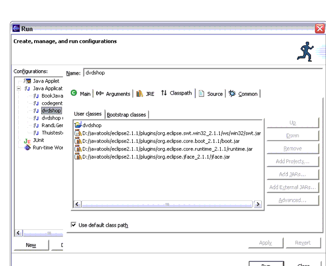
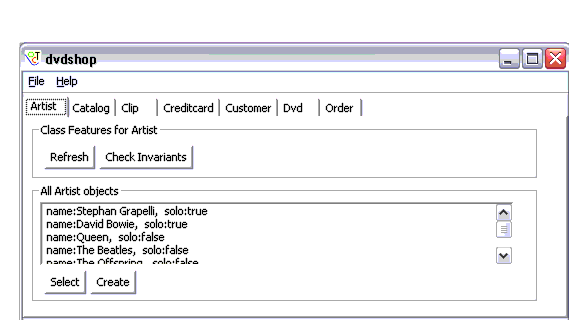
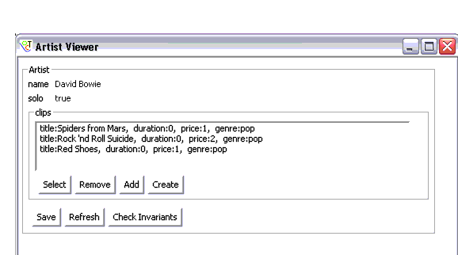

The Generated User Interface
Within Octopus it is possible to generate a user interface. This can be achieved by selecting the option in the Project properties for Code generation.
The user interface generation currently has the status of Proof Of Concept. This means that it works in principle for a small number of projects, but it will fail to work with more complex models. In these cases the generated code may still contain compile errors. Also, the design of the user interface can surely be improved.
This document first describes how to setup Eclipse to run the generated user interface. Then it explains how to use the generated application.
Running the Generated Application
If a user interface is generated, the application can be run as a standalone SWT application. To run it from Eclipse create a Run Configuration in Eclipse. The main class must be gui.generated.App as in:
Under arguments the following needs to be added under VM arguments:
- -Djava.library.path=$ECLIPSE-HOME\plugins\org.eclipse.swt.win32_2.1.1\os\win32\x86\
$ECLIPSE-HOME stands for the location on your system where Eclipse is installed. In the examples below $ECLIPSE-HOME has the value d:\javatools\eclipse2.1.1.

After this you should be able to run the application from Eclipse. Note that the version numbers in the VM argument are dependent on the Eclipse version you use. The numbers above are correct for Eclipse 2.1.1.
In the classpath the following jar files need to be added:

Note that the previous remark about version numbers is valid for these pathnames as well.
NB: The generated user interface has not been tested with Eclipse 3.0. The VM arguments will need to be different. Please check the Eclipse 3.0 documentation for running standalone SWT applications. As a consequence, the generated user interface does not use the Rich Client Platform of Eclipse 3.0, this might change in future versions of Octopus.
The Main Application Window
When the application is started, the main application window is shown, with the name of the Eclipse project as its title. This main window shows a number of tabs, all labeled with the name of a class. On each tab, a list is shown with all objects of the given class. The main window therefore allows you to browse through all existing objects. An example of a main window is shown here:

The tabs Artist, Catalog, Clip, etc. are the names of the classes in the original UML model. In the example the Artist tab shows a list of all Artist objects in the system. Below the list there are two buttons. The Select button will open a new window with the details of the selected object. The Create window will create a new object of the type Artist and opens a window to allow the user to fill in the details.
In the group labeled Class Features for Artist the button Refresh will ensure that the screen is refreshed showing the latest state for all objects. The Check Invariants button checks all OCL invariants defined in the UML model for the given class (Artist in the example). The result is a new window showing all broken invariants. If the class has class attributes defined in the UML model, these will be shown in this group as well.
The Object Detail Window
When we select an object in a list and press Select, we will get a new window showing all the details of the given object. If we select David Bowie in the example, we will get the following window:

For each attribute in the original UML class, there is a label with the name of the attribute and a field with its value. Values can be changed and are directly stored. Whenever a value is syntactically incorrect, it will show in red. If this happens, the Refresh button will restore the latest correct values.
Associations from the UML models are shown in a list. The group around the list and its buttons is labeled with the name of the association-end. In the example this is clips. The user interface has four buttons available for the list:
- Select: shows the details of the selected object in a new window
- Remove: remove the link to the selected object. The selected object will still exist, but will not have a link with the current object anymore.
- Add: opens a selection dialog to select another object. A link to this object is added. As a result it will be shown in the list.
- Create: create a new object and add a link to this object to the current list. A window will open to fill in the details of the newly created object.
At the bottom of the window there are two buttons:
- Refresh: make sure all values shown are up to date
- Check Invariants: check all of the OCL invariants from the UML model for this object.
© Copyright Klasse Objecten, Netherlands
Email address: octopus@klasse.nl